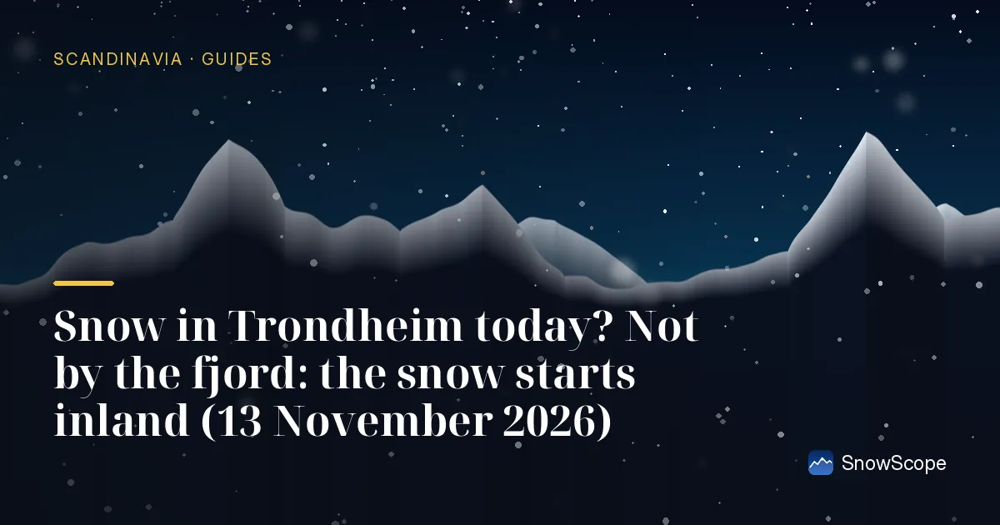
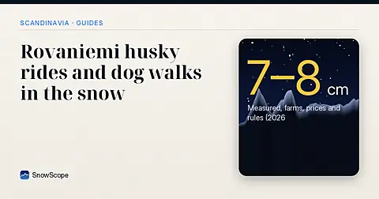

Snow in Trondheim today? Not by the fjord: the snow starts inland (13 November 2026)
On Friday morning, Trondheim's coastal station at Ørland reported no snow on the ground. The city itself sits on wet grass. But step away from the fjord—drive south-west to the hills or east into the Stjørdal valley—and you find real snow cover. This is the story of early November in Trøndelag: geography, not calendar, decides where winter has arrived.
See the live snow forecast for Trondheim in the SnowScope appSnow depth, powder alerts and the 3D map, free.
The fjord stays green; the valleys fill
Ørland, 49 km north across the fjord at sea level, measured bare ground on 13 November. So did Trondheim itself. But 67 km east, in the Stjørdal valley, the station at Meråker sits on 5 cm. Three days earlier it held 3 cm, so a few centimetres fell mid-week and stuck. Push another 100 km south-west to Tågdalen, now at 415 m in the hills west of the city, and the depth jumps to 18 cm—a real base that skiers and walkers can use.
Inland stations at higher elevations tell the same story. Storlien, just over the Swedish border at 583 m, holds 8 cm and kept that depth steady through Thursday. Røros, the high town at 630 m to the south-east, measured 11 cm. Solendet, at 747 m, dropped from 8 cm to 6 cm, losing a few centimetres to wind or thaw on exposed terrain. The pattern is simple: climb or move inland, and winter is established. Stay by the sea or in the city, and you are still waiting.

Early November: ahead of schedule in the hills
Trondheim's snow history near the fjord spans 46 past winters. By 13 November, snow lay on the ground in 26 of them. The middle value—the depth you see half the time—is roughly 2 cm. One winter in four sees 8 cm or more by this date, but equally, one in four arrives with bare ground. Last winter, 2025–26, the city had just 2 cm today. The winter before that, 2024–25, was bare.
The inland hills have built their cover faster. Tågdalen's 18 cm is well above the typical early-November picture for the region. Røros at 11 cm and Storlien at 8 cm are both solid for mid-month. These stations suggest that the first real snow spell arrived early this week, settled on cold ground, and has held its depth. What fell over Trøndelag landed unevenly—the coast got little, the high ground got more—but the pattern is not unusual for early season.
What comes next
Friday afternoon may add a trace of wet snow, up to 1 or 2 cm, but with temperatures climbing to around 2 °C by evening, little will survive on low ground. Saturday and Sunday bring rain, mild air—2 to 4 °C—and no fresh snow. The fjord will stay wet and the city will remain mostly bare. Inland, the existing cover will shrink slightly but should not vanish.
What this means: where to find white
If you are based in Trondheim and want to walk or ski on snow this weekend, stay near the coast and you will walk on green. Drive inland, and you shift the odds. Meråker, an hour's drive east, should keep its thin cover and may gain a centimetre or two. Røros, two hours south, sits at a height where winter has already settled. Bymarka, the forest and rolling hills immediately south-west of the city, rises to 400 m and may hold 5–10 cm by now; it is your closest bet for a snowy walk without leaving the urban zone.
The inland valleys of Trøndelag sit on a snow platform. The thin early-season cover is fragile—rocks may break through, and south-facing slopes may shrink faster than north-facing ones—but it is there. By 1 December the typical depth in this region will climb to roughly 7 cm, by mid-December to about 16 cm, and by mid-January to roughly 32 cm. The base is building.
Travel and safety
Wet snow on cold road surfaces on Friday morning may make city pavements slippery; watch the bike lanes and steep streets. If you drive east towards Meråker or south towards Røros, expect patches of snow on the road from mid-morning onwards. Winter tyres are wise. Drivers heading for the hills after rain on Sunday should wait for roads to dry or accept slow speeds. For anyone venturing into steep terrain in the inland hills, check the official avalanche bulletin on Varsom before you go. Early-season snow is light and unpredictable, and what lies beneath—old grass, moss, and cold earth—may not bond well.
Tips for skiers
- To ski or walk on snow this weekend, drive east to Meråker (1 hour) or south-east to Røros (2 hours). The coast stays green.
- Bymarka, 30 minutes from central Trondheim, is your closest bet for a snowy walk on higher ground.
- Wet snow fell on Friday morning; take care on steep pavements and bike lanes in town until it dries.
- If you head inland, use winter tyres and allow extra time on Saturday evening after rain.
- Steep terrain in the hills: check Varsom avalanche forecast. Early snow sits on a weak base of grass and lichen.
About these numbers
Resort snow depths are the deepest snow on the resort's upper slopes on the date shown; they are estimates for an area, not a measurement at one point. Forecasts can change. Always read the official avalanche bulletin before going off-piste.
Cite this report
For research, teaching or the press: the numbers and charts are free to reuse under CC BY 4.0 with this citation.
SnowScope (2026), Snow in Trondheim today? Not by the fjord: the snow starts inland (13 November 2026), https://snowscope.app/blog/en/2026/11/trondheim-snow-today-13-november-2026.html, accessed 2026-11-13
SnowScope (Atlas Labs). (2026, November 13). Snow in Trondheim today? Not by the fjord: the snow starts inland (13 November 2026). SnowScope snow reports. https://snowscope.app/blog/en/2026/11/trondheim-snow-today-13-november-2026.html
BibTeX
@misc{snowscope2026trondheimsnowtoday13nove,
author = {{SnowScope (Atlas Labs)}},
title = {Snow in Trondheim today? Not by the fjord: the snow starts inland (13 November 2026)},
year = {2026},
month = nov,
howpublished = {\url{https://snowscope.app/blog/en/2026/11/trondheim-snow-today-13-november-2026.html}},
note = {Published 2026-11-14 13:29 UTC; accessed 2026-11-13}
}· CC BY 4.0 · Methods, data and tools →
Follow Trondheim
Free: a message when fresh snow is coming, and the forecast every morning.
More snow reports

Rovaniemi's first snow arrived on 13 November: 7–8 cm at ground level. Here's what husky farms charge, when they open, and how to walk your dog safely in the Arctic.

Røros sits at 630 m on a mountain plateau. On 13 November, 11 cm lay measured at the weather station—thin but real winter snow for the sled-dog season.

Romme Alpin received patchy early snow on 13 November 2026. Borlänge station 12 km away measured 4 cm; Ludvika had 10 cm. Rain dominates the forecast.